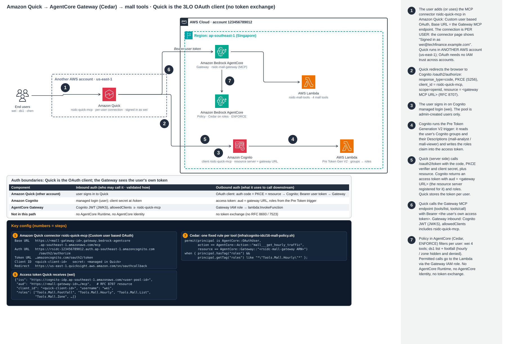

架构：Quick → Cognito → Gateway → Cedar → Lambda
Amazon Quick 是 OAuth 客户端。它让用户登录 Amazon Cognito（authorization code + PKCE，并带 RFC 8707 resource 参数），并保存
该用户自己的 access token。Pre Token Generation trigger 根据用户的 Cognito 组写入 roles claim。随后 Quick 以 MCP 客户端身份直接调用 AgentCore Gateway
rsidc-mall-gateway；Gateway 校验 JWT，Policy in AgentCore（Cedar）根据 roles 逐个工具做出授权决策。
这条路径中没有 AgentCore Runtime、没有 AgentCore Identity，也没有 token 交换。Quick 可以与 Gateway 在同一个或不同的 AWS 账户（us-east-1）中运行；连接器只需要 Gateway URL。

查看原图 · 编号步骤：1 Quick 中的连接器（按用户连接）→ 2 授权（code + PKCE +
resource）→ 3 登录 → 4 Pre Token trigger 添加 roles → 5 token（aud = Gateway URL）→ 6 以 Bearer 方式把用户 token 发给 Gateway → 7 Cedar 按用户判定 → Lambda。